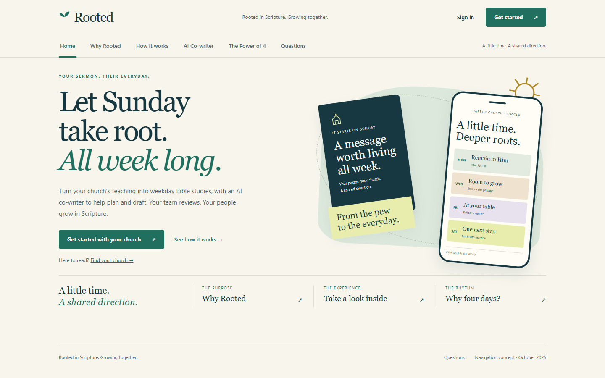
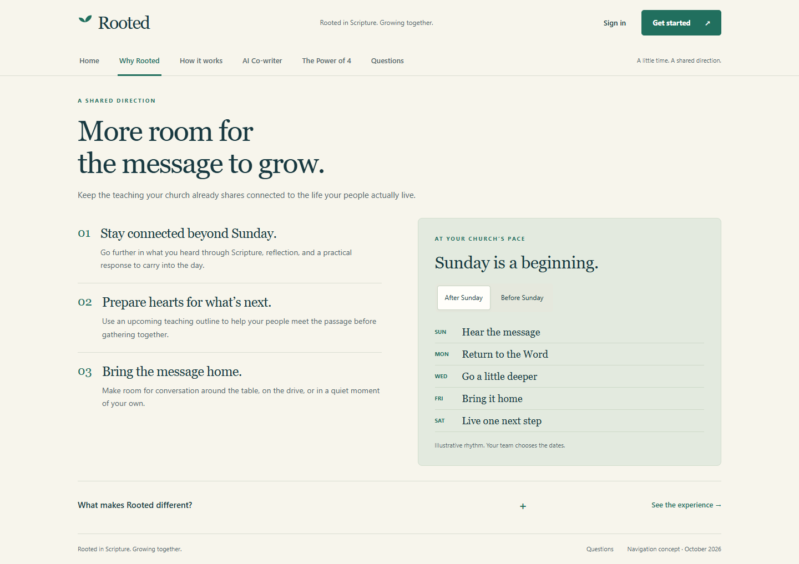
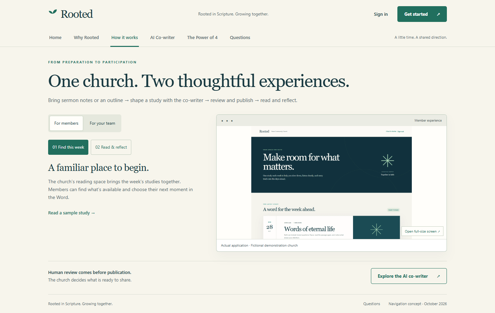
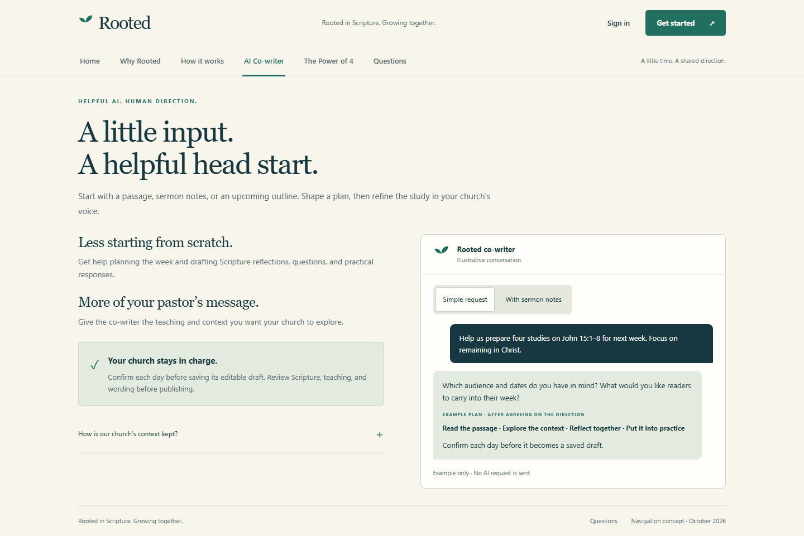
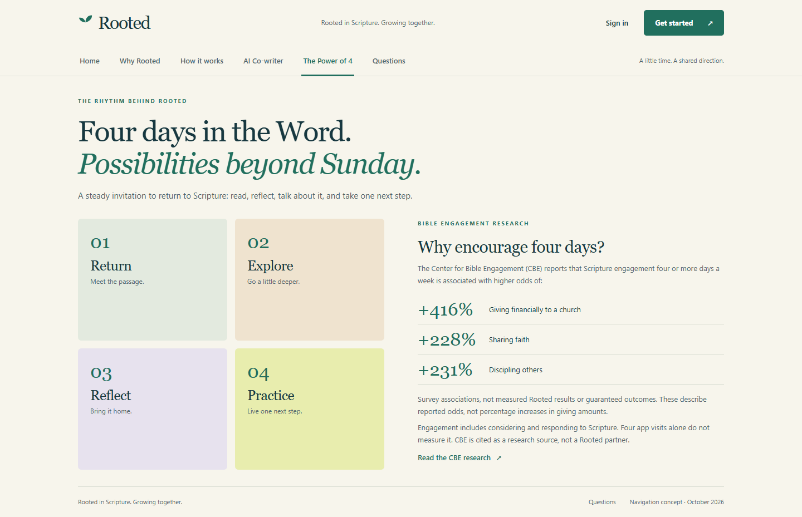
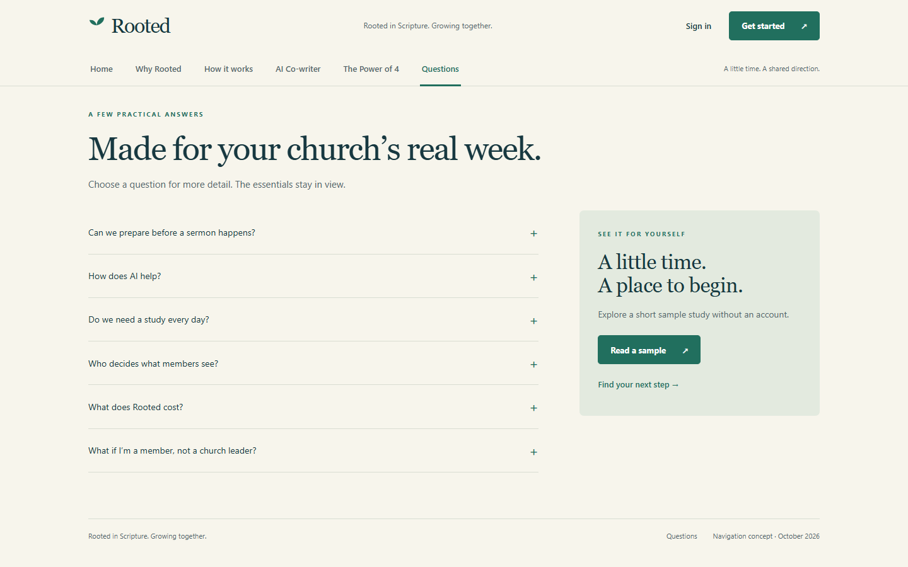

ROOTED · HOMEPAGE NAVIGATION RESEARCH
Less scrolling. A clearer next step.
Six focused topics, one shared header. Click a preview to explore its working page.


Why Rooted
Church benefits, an example week, and the product’s key differences.
Explore page →Phone preview ↗



AI Co-writer
Example requests and the church’s role in confirmation and review.
Explore page →Phone preview ↗

The Power of 4
A Scripture rhythm with the research and qualifications together.
Explore page →Phone preview ↗
